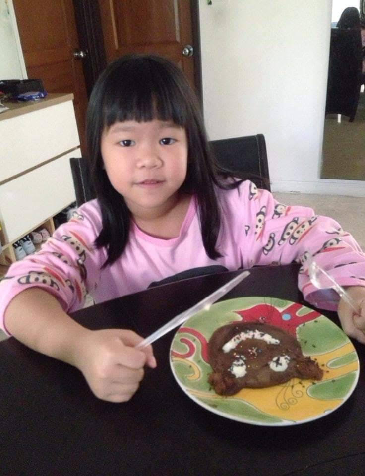

About Me!
Hello, My name is Ping. I am currently a Junior studying in International Community School in Bangkok,Thailand. I took 8 classes this year which are; Yearbook, Applied Technologies, Geology, Statistic, Advance Art Studio, Thai, American Literature,and Spanish.
One of my favorite hobbies is bowling:)
GO HOME